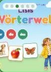

✨ Neu bei Lisi

Geschichten · Neu
Besuch im Krankenhaus
Lisi, Nora, Malik und Tian besuchen ihren Freund Ben in der Kinderklinik.

Spiele · Deutsch
Lisis Wörterwelt
Deutsche Wörter hören, lesen und legen: der, die, das, Buchstaben und mehr.

Bücher · fast neu
D'Lisi an dem Ouschterhues säin Atelier
Bilderbuch auf Luxemburgisch.